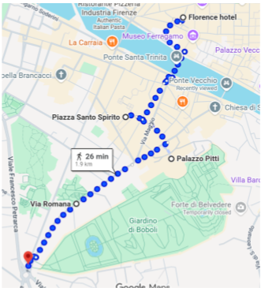
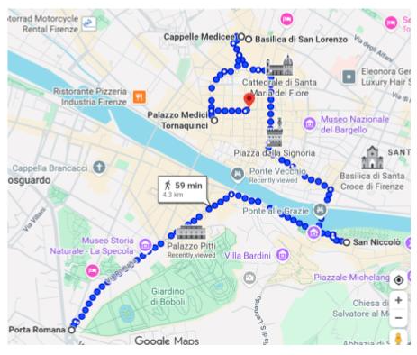
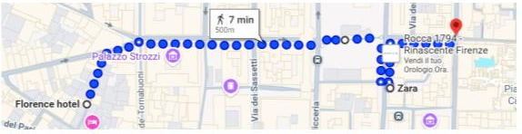

Florencia

- Distrito de Santo Spirito: el mejor plan para perderse entre las calles de Oltrarno. Piazza Santo Spirito.
- Palazzo Pitti: en Oltrarno, del otro lado del río Arno.
- Continuando por la Via Romana se llega hasta Porta Romana. A la izquierda está la entrada a los Jardines de Boboli, enormes jardines construidos por los Medici detrás del Palazzo Pitti.
TIP: el primer domingo de cada mes la entrada es gratuita. ¡Vistas impresionantes!

- San Niccolò: laberinto de calles angostas llenas de talleres y restaurantes locales. Imperdibles: via de Bardi y via de Renai.
- Monte alle Croci: escalones impresionantes con vistas.
- Capilla de los Medici: son dos capillas.
- Basilica de San Lorenzo.
- Palazzo Medici: palacio renacentista.
- Piazza de la Republica: acá está ZARA.
Compras
- Via Piazza de la Republica: Zara.
- Via dei Calzaiuoli: calle peatonal que conecta Piazza del Duomo con Piazza della Signoria, llena de tiendas de grandes marcas.
- Via de' Tornabuoni: alta costura (¡a una cuadra del hotel!).
- Ponte Vecchio: famoso por sus joyerías.

← Volver al inicio